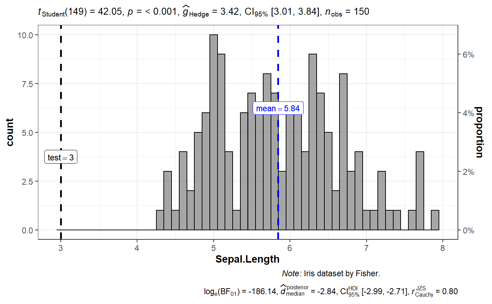

Histogram with statistical details from one-sample test included in the plot as a subtitle.
gghistostats( data, x, binwidth = NULL, xlab = NULL, title = NULL, subtitle = NULL, caption = NULL, type = "parametric", test.value = 0, bf.prior = 0.707, bf.message = TRUE, effsize.type = "g", conf.level = 0.95, nboot = 100, k = 2L, ggtheme = ggplot2::theme_bw(), ggstatsplot.layer = TRUE, bar.fill = "grey50", results.subtitle = TRUE, test.k = 0, test.value.line = FALSE, test.value.line.args = list(size = 1), test.value.label.args = list(size = 3), centrality.parameter = "mean", centrality.k = 2, centrality.line.args = list(size = 1, color = "blue"), centrality.label.args = list(color = "blue", size = 3), normal.curve = FALSE, normal.curve.args = list(size = 2), ggplot.component = NULL, output = "plot", ... )
Arguments
| data | A dataframe (or a tibble) from which variables specified are to be taken. A matrix or tables will not be accepted. |
|---|---|
| x | A numeric variable from the dataframe |
| binwidth | The width of the histogram bins. Can be specified as a
numeric value, or a function that calculates width from |
| xlab | Labels for |
| title | The text for the plot title. |
| subtitle | The text for the plot subtitle. Will work only if
|
| caption | The text for the plot caption. |
| type | Type of statistic expected ( |
| test.value | A number specifying the value of the null hypothesis
(Default: |
| bf.prior | A number between |
| bf.message | Logical that decides whether to display Bayes Factor in
favor of the null hypothesis. This argument is relevant only for
parametric test (Default: |
| effsize.type | Type of effect size needed for parametric tests. The
argument can be |
| conf.level | Scalar between 0 and 1. If unspecified, the defaults return
|
| nboot | Number of bootstrap samples for computing confidence interval
for the effect size (Default: |
| k | Number of digits after decimal point (should be an integer)
(Default: |
| ggtheme | A function, |
| ggstatsplot.layer | Logical that decides whether |
| bar.fill | Character input that decides which color will uniformly fill
all the bars in the histogram (Default: |
| results.subtitle | Decides whether the results of statistical tests are
to be displayed as a subtitle (Default: |
| test.k | Integer denoting the number of decimal places expected for
|
| test.value.line | Logical that decides whether a line corresponding to
the |
| test.value.line.args | A list of additional
aesthetic arguments to be passed to the |
| test.value.label.args | A list of additional
aesthetic arguments to be passed to the |
| centrality.parameter | Decides which measure of central tendency
( |
| centrality.k | Integer denoting the number of decimal places expected
for centrality parameter label. (Default: |
| centrality.line.args | A list of additional
aesthetic arguments to be passed to the |
| centrality.label.args | A list of additional
aesthetic arguments to be passed to the |
| normal.curve | A logical value that decides whether to super-impose a
normal curve using |
| normal.curve.args | A list of additional aesthetic arguments to be passed to the normal curve. |
| ggplot.component | A |
| output | If |
| ... | Currently ignored. |
References
https://indrajeetpatil.github.io/ggstatsplot/articles/web_only/gghistostats.html
See also
Examples
# \donttest{ # most basic function call with the defaults # this is the **only** function where data argument can be `NULL` ggstatsplot::gghistostats( data = ToothGrowth, x = len, xlab = "Tooth length", centrality.parameter = "median" )#># a detailed function call ggstatsplot::gghistostats( data = iris, x = Sepal.Length, type = "p", caption = substitute(paste(italic("Note"), ": Iris dataset by Anderson")), bf.prior = 0.8, test.value = 3, test.value.line = TRUE, binwidth = 0.10, bar.fill = "grey50" )#># }